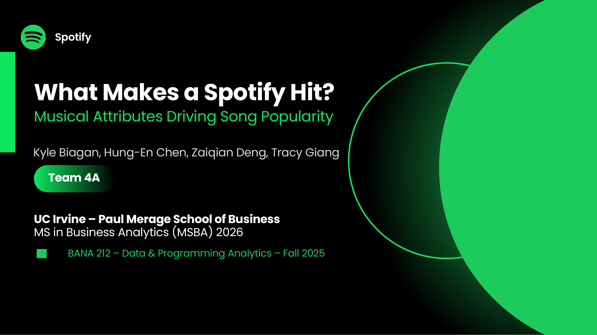
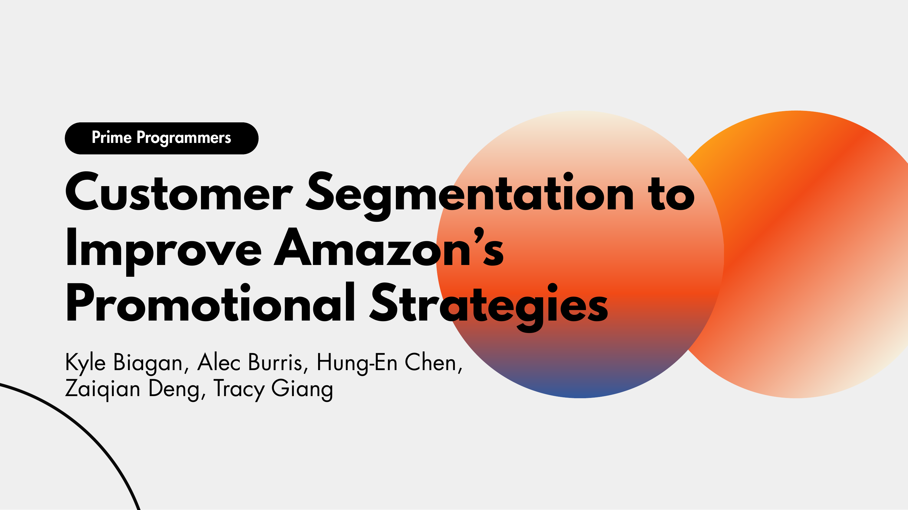

Predicting Disney Box Office Success
Machine learning to classify films as Hit or Average
Machine learning to classify films as Hit or Average

Predicting song popularity from musical attributes
Relational database design, normalization & SQL

Predicting daily store sales with Random Forest

K-Means clustering for targeted promotions
MSBA candidate at UC Irvine, seeking analytics roles
I am an MS in Business Analytics candidate at UC Irvine's Paul Merage School of Business, focused on turning data into clear, practical decisions. I am currently looking for full-time analytics roles. If you would like to talk about data, marketing, or operations analytics, I would love to connect.